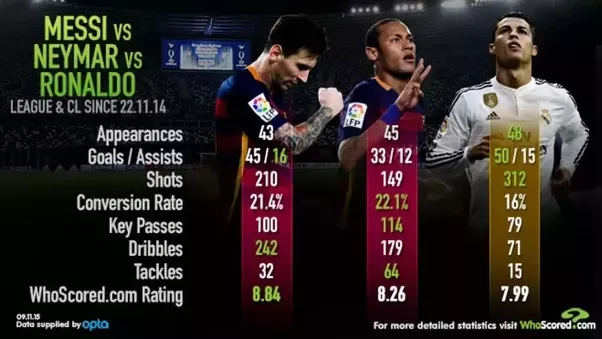

You can click on the pictures for more information about the players via Wikipedia.


Below is a chart showing how these three players compare, specifically focusing the goal/assist ratio:
To be honest, we're not really into soccer but of course, this picture is the picture of the GOAT that we favor: